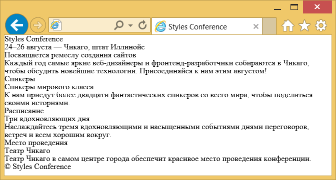
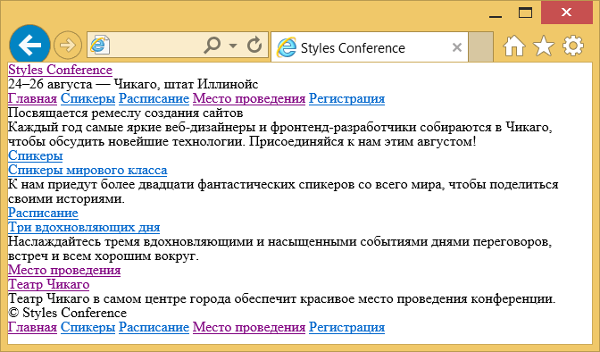

Знакомство с HTML
Введение в HTML и CSS завершено и пора копать немного глубже в HTML и изучить разные компоненты, из которых состоит этот язык.
Чтобы начать создание сайтов мы должны узнать немного о том, какие элементы HTML лучше всего использовать для отображения различных типов содержимого. Важно также понять, как элементы визуально отображаются на веб-странице, а также что различные элементы означают семантически.
Использование надлежащего элемента для работы проходит длинный путь и мы хотим делать обоснованные решения в этом процессе.
Обзор семантики
Так что такое семантика? Семантика в HTML является практикой предоставления смысла и структуры содержимого на странице с помощью соответствующего элемента. Семантический код описывает значение содержимого на странице, независимо от его стиля или внешнего вида. Есть несколько преимуществ от применения семантических элементов — чтобы компьютеры, экранные ридеры, поисковые системы и другие устройства адекватно читали и понимали содержимое веб-страницы. Кроме того, семантический HTML проще для управления и работы с ним, так как ясно показывает, для чего служит каждый фрагмент контента.
Двигаясь вперед и представив новые элементы, мы поговорим о том, что эти элементы на самом деле означают и тип контента, который они представляют лучше. Прежде, чем мы это сделаем давайте рассмотрим два элемента — <div> и <span>, которые на деле не несут никакого семантического смысла. Они существуют только в целях стилизации.
<div> и <span>
<div> и <span> — это элементы HTML, которые действуют как контейнеры исключительно для целей стилизации. В виде основных контейнеров они не несут какого-либо всеобъемлющего смысла или семантического значения. Абзацы семантически уже потому, что содержимое внутри элемента <p> известно и понятно как абзац. <div> и <span> не содержат какого-либо значения и являются просто контейнерами.
Блочные и строчные элементы
Большинство элементов либо блочные, либо строчные. В чём разница?
Блочные элементы начинаются с новой строки, накладываются друг на друга и занимают всю доступную ширину. Блочные элементы могут быть вложены друг в друга и обёртывать строчные элементы. Обычно мы видим как блочные элементы используются для больших кусков контента, такого как абзацы.
Строчные элементы не начинаются с новой строки. Они попадают в обычный поток документа, выстраиваются друг за другом, а их ширина основана на их содержимом. Строчные элементы могут быть вложены друг в друга, однако, они не могут обёртывать блочные элементы. Обычно мы видим строчные элементы в качестве маленьких кусков контента, таких как отдельные слова.
И <div> и <span>, однако, являются чрезвычайно важными при создании сайта, потому что они дают нам возможность применять целевые стили к набору контента.
<div> является блочным элементом, который обычно используется для идентификации больших групп содержимого и который помогает построить макет и дизайн веб-страницы. <span> с другой стороны является строчным элементом и обычно применяется для идентификации мелких групп текста внутри блочного элемента.
Мы обычно видим <div> и <span> с атрибутом class или id в целях стилизации. Выбор значения или имени атрибута class или id требует некоторого внимания. Мы хотим, чтобы выбранное значение было связано с содержимым элемента, а не с его оформлением.
Например, если у нас есть <div> с оранжевым фоном, который содержит ссылки социальных сетей, нашей первой мыслью может быть дать <div> значение class как orange. Что произойдёт, если оранжевый фон позже сменится на синий? Значение класса orange потеряет смысл. Более разумным выбором для значения class будет social, поскольку он относится к содержимому <div>, а не к его стилю.
<!-- div -->
<div class="social">
<p>Меня можно найти в...</p>
<p>Кроме того, у меня есть профиль на...</p>
</div>
<!-- span -->
<p>Скоро мы <span class="tooltip">напишем HTML</span> лучше.</p>Комментарии в HTML и CSS
Предыдущий код включает в себя восклицательные знаки внутри HTML и это нормально. Это не элементы, это комментарии.
HTML и CSS даёт нам возможность оставлять комментарии в коде и любой контент обёрнутый в комментарий не будет отображаться на веб-странице. Комментарии помогают держать наши файлы организованно, позволяют устанавливать напоминания и предлагают нам способ более эффективно управлять кодом. Комментарии становятся особенно полезны, когда есть несколько человек, работающих с одними и теми же файлами.
Комментарии в HTML начинаются с <!-- и заканчиваются -->. Комментарии в CSS начинаются с /* и заканчиваются */.
Использование текстовых элементов
Существует много различных форм медиа, однако текст является преобладающим. Соответственно, есть целый набор разных элементов для отображения текста на веб-странице. Сейчас мы остановимся на наиболее популярных элементах, включая заголовки, абзацы, жирный шрифт для демонстрации важности и курсив для акцента. Позже, в уроке «Работа с типографикой» мы ближе рассмотрим как задавать стиль текста.
Заголовки
Заголовки являются блочными элементами и у них есть шесть разных рангов от <h1> до <h6>. Заголовки помогают быстро разбить содержимое и установить иерархию и они являются ключевыми идентификаторами для пользователей, читающих страницу. Заголовки также помогают поисковым системам индексировать и определять содержание на странице.
Заголовки должны быть использованы в порядке, соответствующему содержанию страницы. Основной заголовок страницы или раздела должен быть размечен с помощью элемента <h1>, а последующие заголовки должны использовать элементы <h2>, <h3>, <h4>, <h5> и <h6>, при необходимости.
Каждый уровень заголовка должен применяться с семантическим смыслом и не должен использоваться, чтобы сделать текст жирным или большим, для этого есть другие, более эффективные способы.
Вот пример HTML для всех разных заголовков и результат отображения на веб-странице.
<h1>Заголовок 1</h1>
<h2>Заголовок 2</h2>
<h3>Заголовок 3</h3>
<h4>Заголовок 4</h4>
<h5>Заголовок 5</h5>
<h6>Заголовок 6</h6>Демонстрация заголовков
Абзацы
За заголовками часто следуют абзацы. Они определяются с помощью блочного элемента <p>. Абзацы могут следовать один за другим, добавляя информацию на страницу по необходимости. Вот пример того, как настроить абзацы.
<p>Стив Джобс был одним из основателей и долгое время главным исполнительным директором Apple.
12 июня 2005 года Стив выступил в Стэнфордском университете.</p>
<p>В своем выступлении Стив призвал выпускников следовать их мечтам и несмотря на неудачи
никогда не сдаваться — совет, который он искренне принял близко к сердцу.</p>Демонстрация абзацев
Жирный текст
Чтобы сделать текст жирным и привлечь к нему внимание мы будем использовать строчный элемент <strong>. Есть два элемента, которые выделят для нас текст жирным шрифтом: элементы <strong> и <b>. Важно понимать семантическую разницу между ними.
Элемент <strong> семантически используется, чтобы придать сильное значение тексту и таким образом является наиболее популярным вариантом для жирного текста. Элемент <b>, с другой стороны, семантически означает стилистическое выделение текста, который не всегда является лучшим выбором для текста заслуживающего внимания. Мы должны оценить значимость текста для которого хотим установить жирность и выбрать соответствующий элемент.
Вот два варианта HTML создания жирного текста в действии:
<!-- Важное значение -->
<p><strong>Внимание:</strong> падающие камни.</p>
<!-- Стилистическое выделение -->
<p>Это рецепт для <b>бекона</b> и <b>майонеза</b>.</p>Демонстрация важного и жирного текста
Курсивный текст
Для курсивного текста, на котором тем самым делается акцент, мы будем использовать строчный элемент <em>. Как и с элементами для жирного текста, имеются два разных элемента, которые устанавливают курсивный текст, каждый со своим семантическим смыслом.
Элемент <em> применяется семантически чтобы сделать акцент на тексте, это наиболее популярный вариант для курсива. Другой вариант — это элемент <i>, он применяется семантически для передачи текста другим голосом или тоном, почти как если бы оно было заключено в кавычки. Опять же, нам нужно будет оценить значение текста, который мы хотим выделить курсивом, и выбрать соответствующий элемент.
Вот код HTML для курсива:
<!-- Делаем акцент -->
<p>Я <em>люблю</em> Чикаго!</p>
<!-- Другой голос или тон -->
<p>Имя <i>Шэй</i> означает подарок.</p>Демонстрация акцента и курсивного текста
Эти текстовые элементы довольно удобны чтобы вдохнуть в наш контент жизнь. В дополнение к этому, существуют структурные элементы. В то время как текстовые элементы определяют заголовки и абзацы, структурные элементы определяют группы контента, такие как «шапка», «статья», «подвал» и др. Давайте взглянем на них.
Создание структуры
Долгое время структура веб-страницы была построена с помощью <div>. Проблема в том, что они не обеспечивают семантическое значение и было довольно трудно определить их смысл. К счастью в HTML5 введены новые структурные базовые элементы, в том числе <header>, <nav>, <article>, <section>, <aside> и <footer>.
Все эти новые элементы предназначены, чтобы придать значение организации наших страниц и улучшить семантику структуры. Это всё блочные элементы и у них нет предполагаемой позиции или стиля. Кроме того, все эти элементы могут быть использованы несколько раз на одной странице, при условии, что каждое использование отражает надлежащее смысловое значение.
Давайте засучим рукава и взглянем на них ближе.

Рис. 2.01. Один из возможных примеров структурных элементов HTML5, придающих смысл организации нашим страницам
<header>
Элемент <header> применяется для идентификации верхней части страницы, статьи, раздела, или другого сегмента страницы. В общем, <header> может включать в себя заголовок, вводный текст и даже навигацию.
<header>...</header><header> против элементов <head> против <h1>...<h6>
Легко спутать элемент <header> с элементом <head> или элементами заголовка, от <h1> до <h6>. Все они имеют разные смысловые значения и должны быть использованы в соответствии с ним. Для справки…
Элемент <header> является структурным элементом, который описывает заголовок сегмента страницы. Он находится внутри элемента <body>.
Элемент <head> не отображается на странице и используется в метаданных, которые включают название документа, а также ссылки на внешние файлы. Он находится непосредственно в элементе <html>.
Элементы заголовка от <h1> до <h6> используются для обозначения нескольких уровней текстовых заголовков всей страницы.
Навигация
Элемент <nav> определяет блок основных навигационных ссылок на странице. Данный элемент должен быть зарезервирован только для главных разделов навигации, таких как глобальная навигация, оглавление, предыдущая/следующая ссылки или других заслуживающих внимания групп навигационных ссылок.
Чаще всего ссылки внутри элемента <nav> будут вести на другие страницы в пределах одного сайта или частей той же веб-страницы. Разные одноразовые ссылки не должны быть обернуты элементом <nav>, они должны использовать только элемент <a>.
<nav>...</nav><article>
Элемент <article> применяется для идентификации независимого, самостоятельного раздела содержимого, который можно классифицировать как изолированный или повторно используемый. Мы часто используем элемент <article> для разметки постов блога, газетных статей, контента добавляемого пользователями и тому подобное.
При принятии решения, следует ли использовать элемент <article>, мы должны определить, может ли содержимое элемента быть повторено в других местах без какой-либо путаницы. Если содержимое элемента <article> было удалено из контекста страницы и помещено, к примеру, в электронную почту или печатную работу, то в содержимом по прежнему должен остаться смысл.
<article>...</article><section>
Элемент <section> применяется для идентификации тематической группы содержимого, которая, как правило, но не всегда, включает в себя заголовок. Группа контента внутри <section> может носить общий характер, но полезно определить всё содержимое как связанное между собой.
Элемент <section> обычно используется для разделения страницы и обеспечения на ней иерархии.
<section>...</section>Выбор между элементами <article>, <section> или <div>
Порой довольно трудно решить, какой из элементов <article>, <section> или <div> лучше подходит для работы, основываясь на его смысловом значении. Хитростью, как и с любым семантическим выбором, является просмотр содержимого.
Оба элемента <article> и <section> организуют структуру документа и помогают наметить его схему. Если содержимое сгруппировано исключительно для стилизации и не несёт ценность для схемы документа, используйте элемент <div>.
Если содержимое добавляется к схеме документа и может быть независимо повторено или перенесено, используйте элемент <article>.
Если содержимое добавляется к схеме документа и представляет собой тематическую группу содержимого, используйте элемент <section>.
<aside>
Элемент <aside> содержит контент, такой как боковые панели, вставки или краткие пояснения, который косвенно связан к окружающим его содержимым. К примеру, при использовании внутри элемента <article>, <aside> может определить содержимое, связанное с автором статьи.
Мы можем инстинктивно думать об элементе <aside> в качестве элемента, который отображается слева или справа на странице. Однако мы должны помнить, что все структурные элементы, включая <aside>, являются блочными и как таковые выводятся с новой строки и занимают всю доступную ширину страницы или элемента, в который они вложены, также известного как их родительский элемент.
<aside>...</aside>Мы обсудим как изменить положение элемента, поместив его справа или слева в группе контента, в уроке 5 «Позиционирование содержимого».
<footer>
Элемент <footer> определяет завершение или конец страницы, статьи, раздела или другого сегмента страницы. Обычно элемент <footer> находится в нижней части его родителя. Содержимое внутри <footer> должно быть связанной информацией и не должно расходиться с документом или разделом, внутри которого находится.
<footer>...</footer>Со структурными и текстовыми элементами за пазухой наши знания HTML действительно начинает работать вместе. Сейчас самое время вернуться к нашему сайту Styles Conference и посмотреть, как мы можем немного улучшить его структуру.
На практике
На данный момент нашему сайту Styles Conference не хватает реальной структуры и содержимого для него. Потратим немного времени, чтобы немного расширить нашу главную страницу.
- Используя существующий файл index.html добавим в него элемент <header>. Он должен включать в себя существующий элемент <h1>; также добавим элемент <h3> в качестве слогана, чтобы поддержать наш элемент <h1>.
<header> <h1>Styles Conference</h1> <h3>24–26 августа — Чикаго, штат Иллинойс</h3> </header> После элемента <header> добавим новую группу содержимого, используя элемент <section>, который презентует нашу конференцию. Мы начнём этот раздел с нового элемента <h2> и закончим абзацем.
<section> <h2>Посвящается ремеслу создания сайтов</h2> <p>Каждый год самые яркие веб-дизайнеры и фронтенд-разработчики собираются в Чикаго, чтобы обсудить новейшие технологии. Присоединяйся к нам этим августом!</p> </section>После презентации нашей конференции, давайте включим ещё одну группу содержимого — несколько тизеров, которые мы ещё добавим, в частности, Спикеры, Расписание и Место проведения. Каждый из этих тизеров должен также находиться в собственном разделе и включать дополнительный текст.
Мы сгруппируем все тизеры внутри элемента <section> и каждый отдельный тизер будет также обёрнут элементом <section>. В итоге, у нас будет три элемента <section> внутри другого <section>, это нормально.
<section> <section> <h5>Спикеры</h5> <h3>Спикеры мирового класса</h3> <p>К нам приедут более двадцати фантастических спикеров со всего мира, чтобы поделиться своими историями.</p> </section> ... </section>В заключение, давайте добавим копирайт в элемент <footer> в конце нашей страницы. Для этого используем элемент <small>, который семантически представляет побочные комментарии и мелкий шрифт — идеально для наших авторских прав.
Как правило, содержимое внутри элемента <small> будет отображаться как бы маленьким, но наш сброс CSS это предотвратит.
<footer> <small>© Styles Conference</small> </footer>
Теперь мы видим как наша главная страница начала оживать.

Рис. 2.02. Наша страница после добавления нового содержимого и структуры
Специальные символы
Элемент <h3> внутри <header>, а также <small> внутри <footer> содержит кое-что интересное, в частности, несколько специальных символов.
Специальные символы включают в себя различные знаки препинания, буквы с диакритическими знаками и символы. Когда они набирается непосредственно в HTML, то могут быть неправильно поняты или ошибочно приняты за другую букву, поэтому должны быть кодированы.
Каждый специальный символ начинается с амперсанда (&) и заканчивается точкой с запятой. Всё, что находится между ними, является уникальным кодом символа, будь это имя или число.
Например, мы могли бы кодировать слово «resumé» как «resumé». В нашем заголовке мы кодировали среднее и длинное тире, а в подвале символ авторского права. Для справки, длинный список кодов символов можно найти на Copy Paste Character.
Наша главная страница начинает складываться, давайте теперь взглянем на создание ссылок, чтобы мы могли добавить дополнительные страницы и построить остальную часть нашего сайта.
Создание гиперссылок
Наряду с текстом, одним из основных компонентов Интернета выступает гиперссылка, которая обеспечивает связь одной веб-страницы или ресурса с другой. Гиперссылки создаются с помощью строчного элемента <a>. Чтобы создать ссылку с одной страницы (или ресурса) на другую, требуется атрибут href (от hyperlink reference). Он определяет назначение ссылки.
Например, нажав на текст «Shay», который находится внутри ссылки со значением атрибута href как http://shayhowe.com, мы перенесём пользователя на мой сайт.
<a href="http://shayhowe.com">Shay</a>Блочные элементы со ссылками
По своей природе элемент <a> является строчным элементом и в соответствии с веб-стандартами, строчные элементы не могут оборачивать элементы блочные. С внедрением HTML5, однако, ссылкам специально разрешили оборачивать блочные, строчные и вообще любые элементы. Это отход от соглашений стандартов, но допустимо для превращения всего блока содержимого на странице в ссылку.
Относительные и абсолютные пути
Двумя наиболее распространёнными типами ссылок являются ссылки на другие страницы этого же сайта и ссылки на другие сайты. Эти ссылки различаются по значению атрибута href, известному также как пути.
Ссылки, ведущие на другие страницы того же сайта, будут содержать относительный путь, который не включает домен (.ru, .com, .org, .edu и др.) в значении атрибута href. Потому что ссылка указывает на другую страницу этого же сайта, поэтому значение href должно включать в себя только имя связанной страницы: about.html, например.
Если страница в ссылке находится в другой папке, то значение href также должно отразить это. Скажем, страница about.html находится в папке pages, относительный путь тогда будет pages/about.html.
Ссылки на другие сайты за пределами текущего требуют абсолютный путь, где значение href должно включать полный домен. Ссылка на Google http://google.com для атрибута href начинается с http и в этом случае включает домен .com.
Ниже щёлкнув на текст «О нас» вы откроете страницу about.html в браузере. Щёлкнув на текст «Google», с другой стороны, в браузере откроется http://google.com.
<!-- Относительный путь -->
<a href="/about.html">О нас</a>
<!-- Абсолютный путь -->
<a href="http://www.google.com">Google</a>Ссылка на адрес электронной почты
Иногда мы хотим создать гиперссылку на наш адрес электронной почты, например, текст гиперссылки «Email Me» при щелчке открывает клиент электронной почты пользователя, заданный по умолчанию и предварительно заполняет часть данных. Как минимум, адрес электронной почты и другую информацию, такую как тема и текст письма, которые также могут быть включены.
Для создания такой ссылки значение атрибута href должно начинаться с mailto:, затем следует адрес электронной почты, на который должно быть отправлено сообщение. Чтобы создать ссылку на адрес shay@awesome.com, к примеру, значением href будет mailto:shay@awesome.com.
Дополнительно может быть добавлена тема, текст и другая информация для почты. Чтобы добавить тему, мы включим параметр subject= после адреса. Первый параметр после адреса должен начинаться вопросительным знаком (?), чтобы связать его с адресом гиперссылки. Несколько слов в строке темы требуют кодирование пробелов с помощью %20.
Добавление текста работает аналогичным образом, как и добавление темы, на этот раз с помощью параметра body= в значении href. Поскольку мы связываем один параметр с другим, нам нужно использовать амперсанд (&) для их разделения. Как и с темой, пробелы должны быть кодированы через %20, а перенос строк с помощью %0A.
Всё вместе, ссылка на shay@awesome.com с темой «Reaching Out» и текстом «How are you» потребует следующее значение атрибута href: mailto:shay@awesome.com?subject=Reaching%20Out&body=How%20are%20you.
Вот полный код:
<a href="mailto:shay@awesome.com?subject=Reaching%20Out&body=How%20are%20you">Email Me</a>Открытие ссылки в новом окне
Одной из доступных особенностей связанной с гиперссылками является способность определить, где ссылка откроется при щелчке. Как правило, ссылки открываются в том же окне, в котором по ним щёлкнули, однако ссылки также могут быть открыты в новых окнах.
Для открытия ссылки в новом окне используйте атрибут target со значением _blank. Этот атрибут определяет, где именно будет отображаться ссылка, а значение _blank задаёт новое окно.
Чтобы открыть http://shayhowe.com в новом окне, код будет выглядеть следующим образом:
<a href="http://shayhowe.com/" target="_blank">Шэй Хоу</a>Связывание частей одной страницы
Периодически мы увидим гиперссылки, которые указывают на часть той же страницы, где отображается ссылка. Типичным примером таких связей является ссылка «Вернуться наверх», которая возвращает пользователя к верхней части страницы.
Мы можем создать ссылку на странице, сначала установив атрибут id, на который мы хотим ссылаться, а затем использовать его значение в атрибуте href элемента <a>.
Используя ссылку «Вернуться наверх» в качестве примера, мы можем вставить атрибут id вверху для элемента <body>. Теперь мы можем создать ссылку с атрибутом href и значением #top, которая ссылается на начало элемента <body>.
Наш код для этой ссылки в той же странице будет выглядеть следующим образом:
<body id="top">
...
<a href="#top">Вернуться наверх</a>
...
</body>Гиперссылки невероятно полезны и сделали революцию в использовании Интернета. Итак, мы рассмотрели как ссылаться на другие страницы или сайты, как создать ссылки на адрес электронной почты и ссылки на части той же страницы. Прежде чем идти дальше, давайте сделаем несколько собственных ссылок.
На практике
Пришло время превратить одностраничный сайт Styles Conference в полномасштабный сайт с несколькими страницами, все они будут связаны вместе с помощью гиперссылок.
Мы начнём с превращения текста «Styles Conference» внутри <h1> в нашем элементе <header> в ссылку на страницу index.html. Поскольку мы уже на странице index.html это может показаться немного странным, что справедливо, но так как заголовок повторяется на других страницах, обратная ссылка на главную страницу будет иметь смысл.
<h1> <a href="index.html">Styles Conference</a> </h1>Чтобы перемещаться по всем другим страницам мы собираемся добавить меню навигации с помощью элемента <nav> внутрь элемента <header>. Мы создадим страницы Спикеры, Расписание, Место проведения и Регистрация; чтобы переходить с нашей главной страницы, соответственно, должны сделать ссылки для всех них.
<header> ... <nav> <a href="index.html">Главная</a> <a href="speakers.html">Спикеры</a> <a href="schedule.html">Расписание</a> <a href="venue.html">Место проведения</a> <a href="register.html">Регистрация</a> </nav> </header>Давайте также для удобства добавим это же навигационное меню из элемента <header> в элемент <footer>.
<footer> ... <nav> <a href="index.html">Главная</a> <a href="speakers.html">Спикеры</a> <a href="schedule.html">Расписание</a> <a href="venue.html">Место проведения</a> <a href="register.html">Регистрация</a> </nav> </footer>Внутри элемента <section>, который описывает нашу конференцию, чуть ниже заголовка мы должны также включить ссылку для регистрации на конференцию. Размещение ссылки ниже абзаца будет работать отлично.
<section> ... <a href="register.html">Зарегистрируйтесь сейчас</a> </section>Мы не должны забыть добавить ссылки на другие страницы во все разделы с тизерами. Внутри каждого раздела, давайте обернём оба элемента <h3> и <h5> ссылкой, ведущей на соответствующую страницу.
Мы должны убедиться, что делаем это для каждого раздела соответственно.
<section> <section> <a href="speakers.html"> <h5>Спикеры</h5> <h3>Спикеры мирового класса</h3> </a> <p>К нам приедут более двадцати фантастических спикеров со всего мира, чтобы поделиться своими историями.</p> </section> ... </section>Теперь нам нужно создать несколько новых страниц. Давайте сделаем файлы speakers.html, schedule.html, venue.html и register.html. Эти файлы должны располагаться в той же папке, что и файл index.html и поскольку мы держим их в той же папке, все наши ссылки должны работать, как и ожидалось.
Чтобы гарантировать, что все наши страницы выглядят одинаково, убедитесь, что все эти новые файлы содержат такую же структуру документа что и файл index.html.
Официально мы больше не работаем с одной страницы, а работаем в действительности с полноценным сайтом.

Рис. 2.03. Наша страница после всех добавленных разных ссылок и навигации
Демонстрация и исходный код
Ниже вы можете просмотреть сайт Styles Conference в его нынешнем состоянии, а также скачать исходный код сайта на данный момент.
Просмотр сайта Styles Conference или Скачать исходный код
Резюме
Семантика, как указано в этом уроке, играет важную роль для обеспечения HTML структурой и смыслом. Двигаясь вперед, мы периодически будем вводить новые элементы, каждый из которых содержит собственное смысловое значение. Смысл всех этих элементов в том, чтобы придать большее значение нашему содержимому.
Ещё раз, в этом уроке мы рассмотрели следующее:
- Что такое семантика и почему она важна.
- Элементы <div> и <span> и разница между блочными и строчными элементами.
- Какие текстовые элементы лучше представляют содержимое страницы.
- Структурные элементы HTML5 и как определить структуру и организацию нашего содержимого и страницы.
- Как использовать гиперссылки для навигации между страницами или сайтами.
Надеюсь, вы начинаете чувствовать себя довольно уверенно с HTML. Осталось немного, что нам ещё следует изучить, но основа уже на месте. Далее мы глубже взглянем на CSS.
Ресурсы и ссылки
- Semantic code: What? Why? How? via Boagworld
- The i, b, em, & strong elements via HTML5 Doctor
- New Structural Elements in HTML5 via Dev.Opera
- The Full mailto Link Syntax via Joost de Valk
См. также

Все материалы сайта доступны по лицензии Creative Commons «Attribution-NonCommercial» («Атрибуция — Некоммерческое использование») 4.0 Всемирная, если не указано иное.